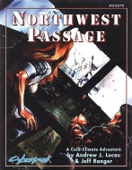

|  | Fiche technique |
| Scénario pour le jeu de rôles Cyberpunk 2020, édité par Atlas Games (1995) | |
| Langue | Anglais |
| Thème | Scénario "survivre au grand froid" |
| Qualité du background | 4 / 5 |
| Qualité des scénarii | 3 / 5 |
| Qualité des règles | 3 / 5 |
| Qualité des illustrations | 2 / 5 |
| Qualité de l'écriture | 3 / 5 |
Tiens, un scénario récent de chez AG. Un peu plus volumineux que ses prédécesseurs, et plutôt honnête dans sa présentation, voilà de quoi surprendre. En y regardant de plus prêt, c'est un scénario magouille / action assez classique, mais se déroulant en Alaska, ce qui le rend original. Du reste, des règles supplémentaires sont fournies pour simuler les effets du froids, et renseigner sur l'équipement utilisé dans ce genre de milieu. La documentation du scénario est inhabituellement importante selon les critères d'AG, et des plans, ainsi que des renseignements géographiques et personnels sur les PNJs sont fournis. Une preuve que que si AG voulait, ils ne feraient pas que de la merde...
{kind=link}